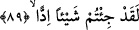
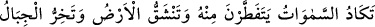
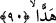
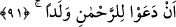

89. Hakikaten siz, pek çirkin bir şey ortaya attınız.
Allah Teâlâ onlara cevaben şöyle buyurdu: “Hakikaten siz, pek çirkin bir şey ortaya
attınız.” Yani siz pek kötü, şaşılacak, fecî ve çirkin bir iş yaptınız” dedi. Yani öyle kötü
bir şey yaptınız ki, miktarı takdîr edilemez, ölçülemez. Kâşifî der ki: “Doğrusu siz
nahoş ve edepsiz bir şekilde kötü bir nesne ortaya getirdiniz.”
90. Bundan dolayı, neredeyse gökler çatlayacak, yer yarılacak ve dağlar yıkılıp
düşecektir!
“Bundan dolayı, neredeyse” bu sözün büyüklüğünden, vahâmetinden “gökler” tekrar
tekrar param parça “çatlayacak, yer yarılacak,” yarılıp parçalara ayrılacak “ve dağlar
yıkılıp düşecektir!”
Bazı sahâbelerden rivâyet edildiğine göre, âdemoğlu herhangi bir ağacın yanına
geldiğinde mutlaka bir menfaat elde ederdi. Ancak âdemoğullarının günahkârları:
“Rahman çocuk edindi” deyince yer sarsıldı ve ağaçlar da diken bitirdi.
Âyetin anlamı şöyledir: Şâyet bu çirkin sözlerin dehşeti ve korkusu hissedilir bir
şekle bürünse, bu büyük kütleler ona dayanamaz, onun şiddetinden dağılırdı. Ya da o
sözlerin çirkinliği, Allâh’ın gazabını çekmekte ve öfkesini gerektirmekte o kadar
şiddetli idi ki, Allâh’ın yeryüzü halkına karşı hilmi olmasaydı ve onlara cezâ vermekte
acele etmiş olsaydı, dünya harâb olur ve dünyanın direkleri o sözü söyleyenlere olan
kızgınlığından ötürü parçalanırdı.
91. Rahmân’a çocuk isnadında bulunmaları yüzünden.
“Rahmân’a çocuk isnâdında bulunmaları yüzünden” yani onların “Allah çocuk
edindi” şeklindeki sözlerinden ötürü neredeyse gökler çatlayacak, yer yarılacak ve
dağlar yıkılıp dağılacaktı. Âyet İsâ, Üzeyr ve melekler gibi Allâh’ın oğlu ya da kızı diye
iddiâ edilen bütün varlıkları içine almaktadır. Eğer sadece meselâ ‘Rahmân’a İsâ’yı
çocuk olarak isnâd etmeleri yüzünden’ denilseydi diğerlerini içine almayacaktı.